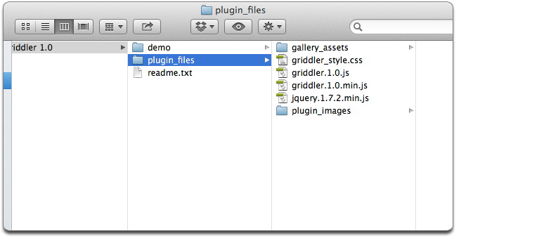

Plugin: Griddler jQuery Plugin
By: mkamla
Created: October 13th, 2013
Version: 1.1.0
Thank you for purchasing the Griddler jQuery Plugin. If you have any questions that are beyond the scope of this help file, please feel free to send us an email using the contact form on our Codecanyon profile page. Thank you again for your purchase of the Griddler jQuery Plugin!
The files in the download are comprised of a 'readme.text' file, and two main folders: 'demo' and 'plugin_files'. The demo folder contains all of the documentation, demonstration and help files. The plugin_files folder contains all necessary files for the plugin to work on your installation.
The 'demo' folder (below) is not essential for your plugin to work. The files inside this folder are to be used for your reference. A description of each file contained in this folder is listed below.
The 'plugin_files' folder contain all the files necessary for the Griddler plugin. These files are required for your installation of the plugin. The files that make up the plugin are listed below.

Inside the <head> of your HTML document, you will need to include the necessary CSS and Javascript files. Start by including the Griddler CSS file.
<link rel="stylesheet" type="text/css" href="griddler_style.css" />
The plugin requires the jQuery javascript library. So,the the jQuery library is added in the <head>. jQuery version 1.8.0 is recommended, but other versions of jQuery may be compatible. Use alternate versions at your own risk.
<script type="text/javascript" src="jquery.1.8.0.min.js"></script>
On the next line, the minified Griddler plugin is included.
<script type="text/javascript" src="griddler.1.1.0.min.js"></script>
The code inside of the <head> element should look similar to the example below.
<head>
<link rel="stylesheet" type="text/css" href="griddler_style.css" />
<script type="text/javascript" src="jquery.1.8.0.min.js"></script>
<script type="text/javascript" src="griddler.1.1.0.min.js"></script>
</head>
The HTML <body> structure requires an unordered list <ul> with an ID attribute. In this example, our <ul> ID is "demo", but you may assign whatever value you want to the ID attribute, provided the value is unique. <ul> elements contain list items <li>. Each <li> will represent an individual grid item once the plugin has been initiated.
<body>
<ul id="demo">
<li></li>
<li></li>
<li></li>
</ul>
</body>
Then, inside each <li> tag, you will need to include an anchor tag <a>. In between the opening and closing of the <a>, insert an image tag <img />.
Finally, after each <a> closing, create a <div> with a "project_info" class. Inside the <div> tag, create a <h2> element. You can put your items' information in plain text here. The code is shown below.
<body>
<ul id="demo">
<li>
<a href="http://codecanyon.net">
<img src="image1.jpg" alt="" />
</a>
<div class="project_info">
<h2>This is a project description</h2>
</div>
</li>
<li>
<a href="http://codecanyon.net">
<img src="image1.jpg" alt="" />
</a>
<div class="project_info">
<h2>This is a project description</h2>
</div>
</li>
<li>
<a href="http://codecanyon.net">
<img src="image1.jpg" alt="" />
</a>
<div class="project_info">
<h2>This is a project description</h2>
</div>
</li>
</ul>
</body>
The HTML code shown above is the absolute minimum markup you need to start your plugin. Make sure that all of your anchor tags and images are correctly linked to their respective targets.
Top of PageThe Griddler plugin uses one primary CSS file named 'griddler_style.css'. There are three sections within the CSS file. They are marked with opening and closing comments. An example is shown below.
/*-----START BASIC HTML STYLE RULES-----*/
Sample CSS Rule Here {
}
/*-----END BASIC HTML STYLE RULES-----*/
Each CSS section is listed below in order of appearance in the document along with the line number of the start of each section.
If you would like to edit a specific section of the site, simply find the appropriate label in the CSS file, and then scroll down until you find the appropriate style that needs to be edited. Some common CSS styling rules that maybe of interest are listed below with a description with important lines highlighted in bold.
Grid Description: To change the style of the text of each grid's project information, start on line 48.
#featured_project h2, #project_top h2, #project_btm h2 {
color:#FFF;
font-family:Helvetica, Arial, sans-serif;
font-weight:normal;
text-shadow:0px 1px 0px #303030;
margin:0px;
padding:0px;
text-align:center;
position:relative;
top:120%;
}Grid Project Info Background: To change the background image of each grid's project information, start on line 60. The default background image is a one square pixel .PNG file with roughly an 85% opacity. The background is repeated over the project info area. The default background is a dark overlay. To change it to a light-colored overlay, direct the 'background-image' value to "url(plugin_assets/light_bg.png)". This value may change if you have placed the plugin image files under a different folder.
.project_info {
cursor:pointer;
position:absolute;
top:0;
left:0;
z-index:10;
background-image:url(plugin_assets/dark_bg.png);
background-repeat:repeat;
display:none;
}Lightbox Background: To change the background image of the lightbox background overlay, start on line 99. This process is very similar to the example above.
#lightbox_wrapper {
width:100%;
height:100%;
position:fixed;
top:0px;
left:0px;
background-image:url(plugin_assets/lightbox_overlay.png);
background-repeat:repeat;
text-align:center;
z-index:10000;
display:none;
}Lightbox Close Button: To change the lightbox's close button, start on line 126. You may change the buttons height and width as well as the background image, which displays the 'X' button in the demo. You may replace this image with one of your own or you may edit the existing image in a graphics program of your choice.
Please note this item uses CSS sprites. If you're unfamiliar with this concept, please visit this tutorial on Exactly How to Use CSS Sprites.
#close_lightbox {
width:59px;
height:58px;
background-color:#000;
background-image:url(plugin_assets/close_lightbox_btn.png);
background-position:0px 0px;
border-top:solid 1px #404040;
border-right:solid 1px #404040;
border-bottom:solid 1px #404040;
overflow:hidden;
position:absolute;
top:0px;
right:-61px;
}
#close_lightbox:hover {
cursor:pointer;
background-position:0px -58px;
}
This plugin utilizes two Javascript files. Each file is listed below with a brief description.
To initiate the plugin, include the following jQuery in the <head>, just below the CSS and Javascript inclusions described earlier in the HTML section.
<script type="text/javascript">
$(document).ready(function(){
$('#demo').Griddler();
});
</script>
The jQuery code above initiates the Griddler() method on <ul id="demo"> as soon as the DOM is fully loaded. This code is required for your plugin to work.
Below you will find a list of every Griddler plugin option. These are settings that you can specify inside of your jQuery code. If no settings are explicitly defined, like the example above, then the default option value will be applied.
Below is an example of calling the Griddler plugin with all available options shown. Each option value is assigned the default value described above. Note the curly brackets "{}", inside of the parenthesis. The brackets are required inside the Griddler function argument when you define a plugin option.
<script type="text/javascript">
$(document).ready(function(){
$('#demo').Griddler({
ratio: '16:9',
columns: 4,
featureGrid: 'inline',
rollover: true,
gridLimit: 13,
expandLimit: true
});
});
</script>
Examples of customizing these options is shown in Demo 1, Demo 2 and Demo 3.
For the simplest way to get your plugin installed, please view the Quick Start page.
Top of PageThank you for purchasing the Griddler jQuery Plugin. If you need help, please Contact Us.